Plots¶
This page covers the plotting helpers beyond maps: images, scatter and
agreement plots, time series, model comparisons, rankings, scorecards,
vertical sections and Hovmöller diagrams. Every helper takes ax=None and
creates a figure when it is missing; see the
calling conventions for what each
returns.
Showing images and heatmaps¶
image() shows an intensity array coloured by cmap, or an
(H, W, 3|4) colour image, without ticks. stretch=True contrast-stretches a
colour image per channel. heatmap() adds row and column
labels and, with annotate=True, the value of each cell.
import nicefigs as nf
from nicefigs import data
nf.set_theme("paper")
fig, (ax_img, ax_hm) = nf.subplots(1, 2, width="full", panel_aspect=0.8, wspace=0.3)
nf.image(data.rgb_patch(), stretch=True, title="RGB patch", ax=ax_img)
nf.heatmap(
data.heatmap_matrix(shape=(5, 6)),
row_labels=list("ABCDE"),
col_labels=[f"c{j}" for j in range(6)],
annotate=True,
ax=ax_hm,
)
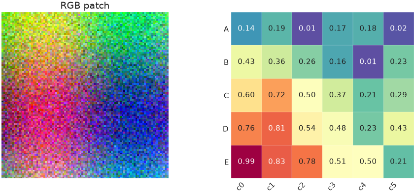
A three-channel array is drawn as colour; a two-dimensional array is drawn
with cmap.
image_grid() lays out several images with one shared
colour scale and colorbar. colorbar_mode is "single" (default), "row",
"each" or "none"; shared_scale=False gives each image its own limits.
import nicefigs as nf
from nicefigs import data
nf.set_theme("paper")
images = [data.regional_grid(seed=i)[2] for i in range(6)]
fig, axes = nf.image_grid(
images,
nrows=2,
ncols=3,
width="full",
cmap="Spectral_r",
colorbar_label="value",
titles=[f"member {i + 1}" for i in range(6)],
)
nf.label_panels(axes)
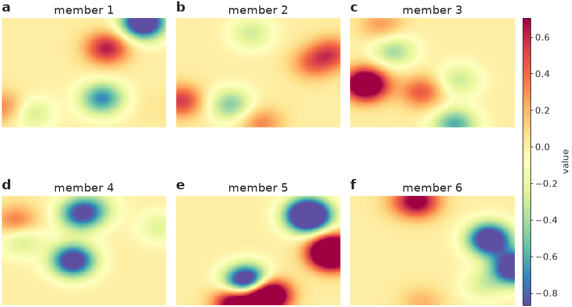
All six panels share one colorbar, so equal colours mean equal values.
For land-cover rasters, pass a Categorical palette's
.to_rgb() to image(); see
Colormaps & palettes.
Scatter plots with encodings¶
scatter() maps extra variables onto marker shape (a
categorical group), size (size, scaled into size_range) and colour (a
continuous hue, or group), and builds a legend for each.
import nicefigs as nf
from nicefigs import data
nf.set_theme("paper")
d = data.scatter_bubbles(n=140)
ax, artists = nf.scatter(
d["x"], d["y"], group=d["group"], size=d["size"], size_label="area [km²]", alpha=0.8
)
nf.set_labels(ax, "predictor", "response")
print(sorted(artists))
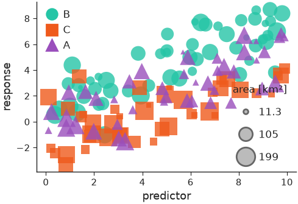
With group, the second return value maps each group to its collection.
hue=values, colorbar=True colours by a continuous variable instead;
xerr/yerr add error bars and point_labels with label_top=n labels the
n most extreme points.
Agreement plots¶
agreement() compares predictions with observations:
a density of the point cloud (density="kde", "hexbin" or "hist"), a
dashed 1:1 line, outliers as faint points, a regression line and a metrics
box. It returns the metrics as a dict.
import nicefigs as nf
from nicefigs import data
nf.set_theme("paper")
obs, pred = data.xy_agreement()
ax, stats = nf.agreement(
obs, pred, xlabel="observed runoff", ylabel="predicted runoff", units="mm d⁻¹", width="half"
)
print({k: round(float(v), 3) for k, v in stats.items()})
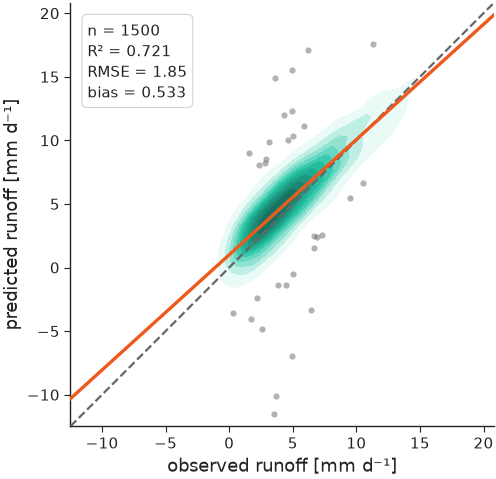
The printed metrics are the ones in the box on the plot.
Time series¶
timeseries() plots named series against dates and
picks date ticks for the span. bands shades an interval per series and
highlight draws one series thicker and on top.
import nicefigs as nf
from nicefigs import data
nf.set_theme("paper")
dates, series = data.timeseries(n_days=365)
model = series["model A"]
ax = nf.timeseries(
dates,
series,
bands={"model A": (model - 2.0, model + 2.0)},
highlight="observed",
ylabel="air temperature",
yunits="degC",
width="full",
)
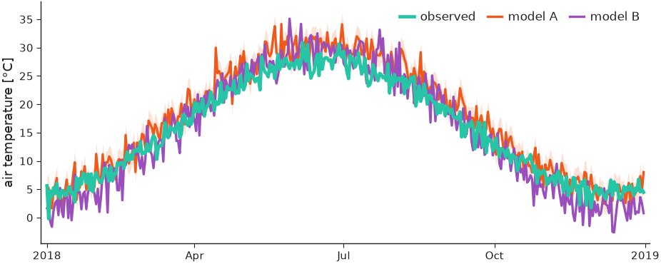
The observed series sits on top of the two models; model A carries its band.
Sparse observations go in obs=(dates, values) and are drawn as markers.
obs_hue colours them by a third variable, with obs_colorbar=True for its
colorbar:
import numpy as np
import nicefigs as nf
from nicefigs import data
nf.set_theme("paper")
dates, series = data.timeseries(n_days=200, series=["model"])
rng = np.random.default_rng(0)
idx = np.sort(rng.choice(len(dates), 60, replace=False))
obs_dates = [dates[i] for i in idx]
obs_vals = series["model"][idx] + rng.normal(0, 1, 60)
ax = nf.timeseries(
dates,
series,
obs=(obs_dates, obs_vals),
obs_hue=rng.uniform(0, 12000, 60),
obs_cmap="viridis",
obs_hue_label="altitude [m]",
obs_colorbar=True,
ylabel="CO2",
yunits="ppm",
width="full",
)
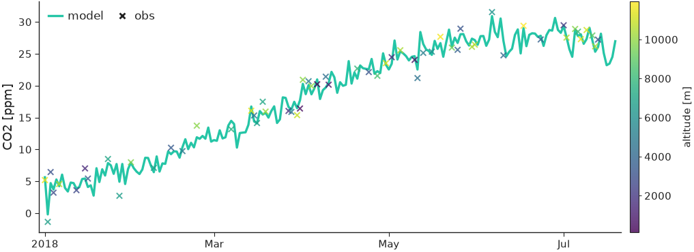
styles sets per-series line styles and annotation writes a short note in
the panel, which suits small multiples built with
facet() (see Figures & sizing).
Comparing models¶
model_comparison() takes
{metric: {model: values}}, or {metric: {model: {group: values}}} for a
second split such as timescale, and draws one panel per metric with a violin
(kind="violin"), box ("box") or strip ("strip") per model.
import nicefigs as nf
from nicefigs import data
nf.set_theme("paper")
scores = data.model_scores()["scores"]
fig, axes = nf.model_comparison(
scores, group_label="timescale", kind="box", metric_units={"RMSE": "mm"}
)
print(len(axes))
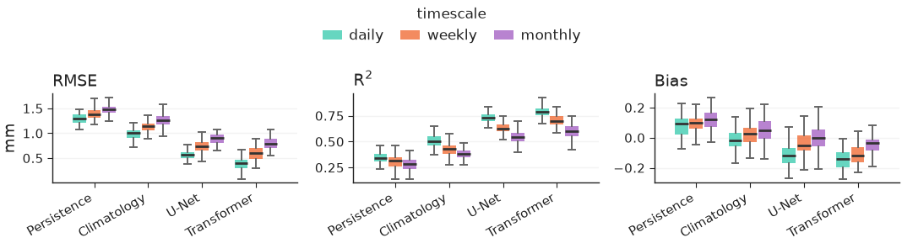
One panel per metric, with the groups dodged inside each model and one shared legend.
taylor() summarises the same question in one diagram:
each model sits at its correlation (angle) and standard deviation (radius),
with centred-RMS arcs around the reference. Give each model a correlation
and either std or std_ratio.
import nicefigs as nf
nf.set_theme("paper")
ax = nf.taylor(
[
{"name": "model A", "correlation": 0.93, "std_ratio": 0.98},
{"name": "model B", "correlation": 0.80, "std_ratio": 1.15},
{"name": "model C", "correlation": 0.65, "std_ratio": 0.70},
],
width="half",
)
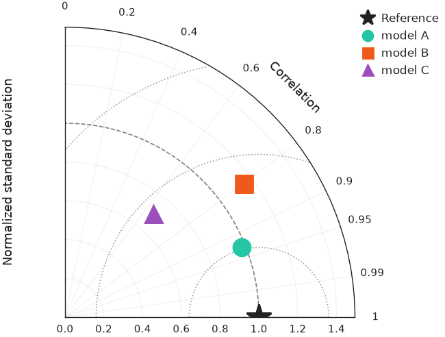
Model A lies closest to the reference star, so it has the smallest centred RMS error.
Ranking and trade-offs¶
pareto() scatters a trade-off and draws the
non-dominated frontier() on top, one per group with
frontier_per_group=True. xdirection and ydirection say which way is
better; they define the frontier and add arrows to the axis labels.
import nicefigs as nf
from nicefigs import data
nf.set_theme("paper")
d = data.pareto_tradeoff()
ax, _ = nf.pareto(
d["x"],
d["y"],
group=d["group"],
frontier_per_group=True,
xdirection="higher_better",
ydirection="higher_better",
xlabel="speed",
ylabel="skill",
)
front = nf.frontier(d["x"], d["y"], xdirection="higher_better", ydirection="higher_better")
print(len(front), "of", len(d["x"]), "points are Pareto-optimal")
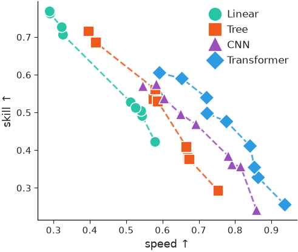
Each group traces its own frontier: no point on it can gain speed without
losing skill. baselines={label: y} adds labelled horizontal reference lines.
caterpillar() ranks per-item values with error bars,
optionally with a baseline series offset next to each item and a summary
annotation.
import nicefigs as nf
from nicefigs import data
nf.set_theme("paper")
s = data.site_metrics(n_sites=16)
ax = nf.caterpillar(
s["labels"],
s["bias"],
err=s["std"],
groups=s["layer"],
baseline=s["baseline"],
baseline_label="reference model",
value_label="bias",
value_units="ppmv",
ref_line=0.0,
)
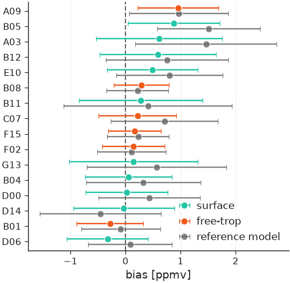
Items are sorted by value, coloured by group, with the reference model's value offset beside each.
Scorecards¶
scorecard() renders a model × metric table as
coloured cells. By default each column is ranked on its own, using each
metric's direction from DIRECTIONS, and the best
cell per column is outlined.
import numpy as np
import nicefigs as nf
from nicefigs import data
nf.set_theme("paper")
ms = data.model_scores()
values = np.array(
[[np.mean(ms["scores"][m][model]["daily"]) for m in ms["metrics"]] for model in ms["models"]]
)
ax = nf.scorecard(
values,
row_labels=ms["models"],
col_labels=ms["metrics"],
direction={"RMSE": "lower_better", "Bias": "target", "R$^2$": "higher_better"},
col_units={"RMSE": "mm"},
)
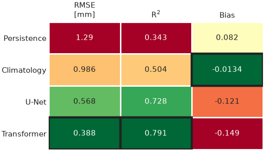
Bias is ranked by closeness to zero, the default target.
To colour cells by their value instead, pass a norm, for example from
scorecard_diverging_cmap().
col_groups gaps and titles groups of columns, square=True forces square
cells and colorbar=True adds a colorbar.
import numpy as np
import nicefigs as nf
nf.set_theme("paper")
rng = np.random.default_rng(1)
pct_diff = np.vstack([np.zeros(4), rng.normal(-8, 6, (2, 4))])
cmap, norm = nf.scorecard_diverging_cmap()
ax = nf.scorecard(
pct_diff,
row_labels=["baseline", "model A", "model B"],
col_labels=["Z500", "T850", "T2m", "MSL"],
cmap=cmap,
norm=norm,
direction=dict.fromkeys(["Z500", "T850", "T2m", "MSL"], "lower_better"),
col_groups=["upper air", "upper air", "surface", "surface"],
square=True,
cell_format="{:+.0f}",
colorbar=True,
colorbar_label="RMSE difference [%]",
)
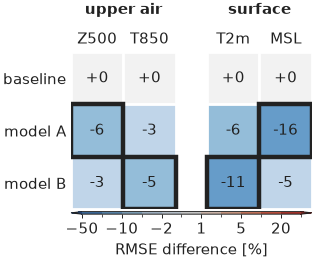
Negative differences, an improvement over the baseline, are blue; the outline marks the lowest value per column.
skill_gap() computes the signed distance of each value
from a reference, positive where the value is better. Passing reference= to
scorecard colours cells by this gap, so metrics in different units share one
scale.
import nicefigs as nf
gap = nf.skill_gap([[0.8, 1.2]], [[1.0, 1.0]], direction=["higher_better", "lower_better"])
print(gap)
Both values are 0.2 worse than the reference, whichever way their metric is read.
Bar charts¶
grouped_bars() dodges one bar per
(category, series); stacked_bars() stacks the
series within each category, as fractions with normalize=True.
import nicefigs as nf
nf.set_theme("paper")
regions = ["Amazon", "Congo", "Boreal", "Sahel"]
fig, (ax_g, ax_s) = nf.subplots(1, 2, width="full", panel_aspect=0.8, wspace=0.35)
nf.grouped_bars(
regions,
{"model A": [0.72, 0.65, 0.80, 0.55], "model B": [0.81, 0.74, 0.85, 0.63]},
value_label="skill",
rotation=30,
ax=ax_g,
)
nf.stacked_bars(
regions,
{"forest": [0.7, 0.6, 0.5, 0.1], "grass": [0.2, 0.25, 0.2, 0.5], "bare": [0.1, 0.15, 0.3, 0.4]},
normalize=True,
rotation=30,
ax=ax_s,
)
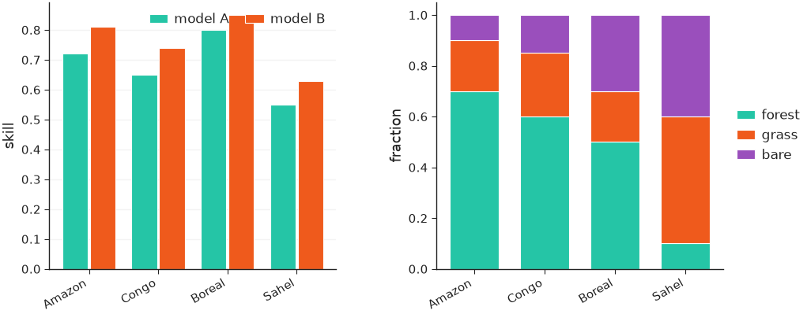
Vertical sections and profiles¶
cross_section() draws a field over a horizontal
and a vertical coordinate, such as latitude × pressure.
cross_section_panels() lays out several
with shared colorbars: fields named in diff_fields go on a symmetric
diverging scale, and log_y=True log-scales the vertical axis.
import nicefigs as nf
from nicefigs import data
nf.set_theme("paper")
cs = data.cross_section_field()
value = cs["value"]
fig, axes = nf.cross_section_panels(
{"CO₂": value, "anomaly": value - value.mean(axis=0, keepdims=True)},
cs["lats"],
cs["levels"],
diff_fields={"anomaly"},
value_label="CO₂ [ppm]",
diff_label="Δ CO₂ [ppm]",
log_y=True,
)
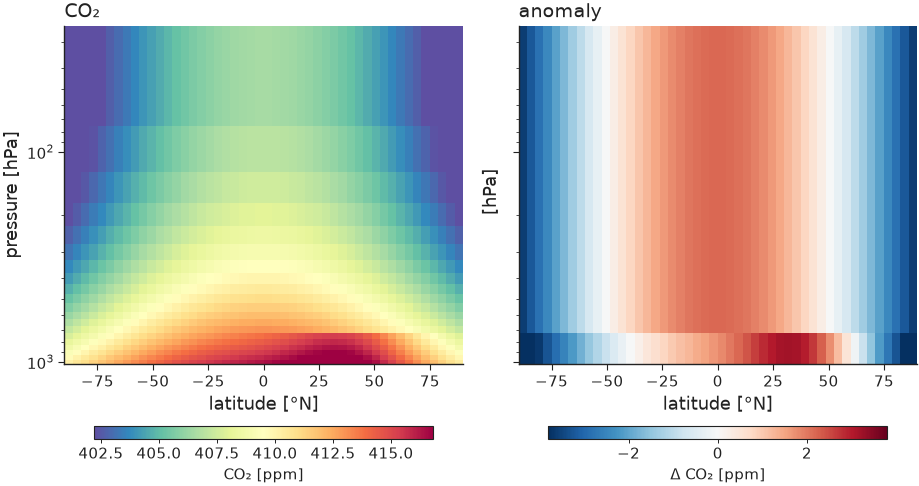
The anomaly panel gets its own diverging colorbar, centred on zero.
profile() draws value-versus-level profiles with an
inverted vertical axis and dashed baselines.
import nicefigs as nf
from nicefigs import data
nf.set_theme("paper")
vp = data.vertical_profiles()
ax = nf.profile(
vp["profiles"],
vp["levels"],
baselines={"reference": vp["baseline"]},
xlabel="CO₂",
xunits="ppmv",
ylabel="pressure",
yunits="hPa",
log_y=True,
width="half",
)
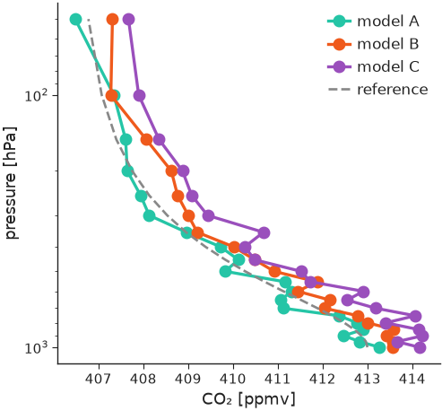
Hovmöller diagrams¶
hovmoller() draws a field over time and one spatial
coordinate; hovmoller_panels() lays out model,
reference and difference with split colorbars, like cross_section_panels.
import nicefigs as nf
from nicefigs import data
nf.set_theme("paper")
h = data.hovmoller_field()
fig, axes = nf.hovmoller_panels(
{"Model": h["value"], "Reference": h["reference"], "Difference": h["value"] - h["reference"]},
h["times"],
h["lats"],
diff_fields={"Difference"},
value_label="CO₂ [ppm]",
diff_label="Δ CO₂ [ppm]",
)
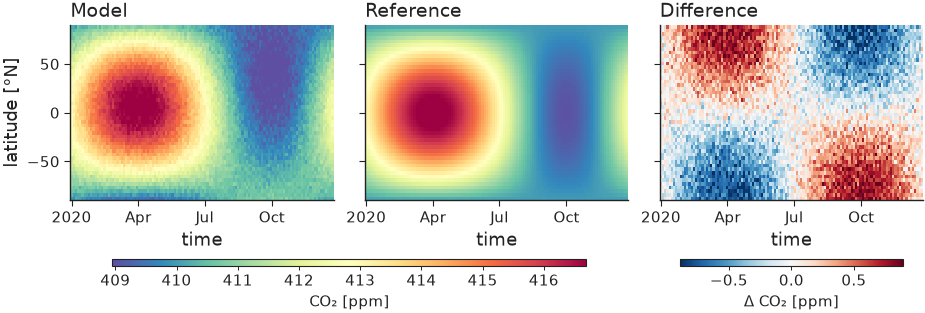
Composites of many channels¶
pca_rgb() projects an (H, W, C) field onto its first
three principal components and returns a stretched (H, W, 3) image. With
return_basis=True it also returns the projection and its colour limits;
passing that basis to later calls keeps several patches on one colour scale.
image(..., overlay_contour=mask) outlines a mask on top.
import numpy as np
import nicefigs as nf
nf.set_theme("paper")
rng = np.random.default_rng(0)
cube = rng.normal(size=(64, 64, 8)).cumsum(axis=0).cumsum(axis=1)
rgb, basis = nf.pca_rgb(cube, return_basis=True)
fig, ax = nf.subplots(width="single", aspect=1.0)
nf.image(rgb, overlay_contour=cube[..., 0] > np.median(cube[..., 0]), ax=ax)
print(rgb.shape, float(rgb.min()), float(rgb.max()))
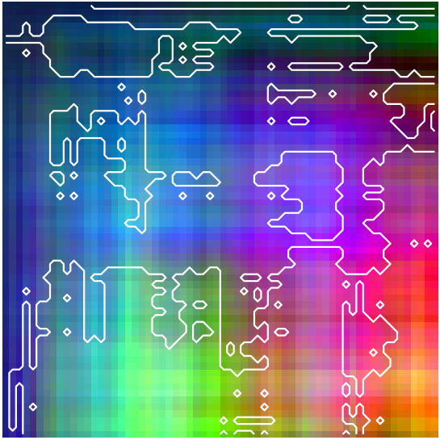
Plotting eigen-spectra¶
spectrum() plots covariance eigenvalues λ_k against
rank k on log–log axes, normalised to λ_k / Σλ by default. Pass one 1-D
array, a list, or a {name: eigenvalues} dict to overlay several states;
reference_alpha adds a k^-α power law through the first series' leading
value:
import nicefigs as nf
from nicefigs import data
nf.set_theme("paper")
spectra = data.eigen_spectra() # {"lead 6 h": λ, "lead 24 h": λ, "lead 72 h": λ}
fig, axes = nf.subplots(1, 2, width="full", aspect=0.42, layout="constrained")
nf.spectrum(spectra, ax=axes[0], reference_alpha=1.0)
nf.spectrum(spectra, ax=axes[1], cumulative=True, legend=False)
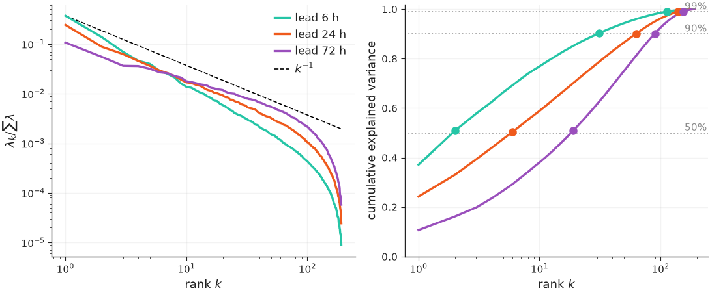
cumulative=True (right) plots the cumulative explained-variance fraction on a
log rank axis, with one labelled dotted guide per threshold and a marker where
each series first reaches it. Each spectrum is sorted descending and loses its
non-finite, non-positive and round-off-sized (λ ≤ rtol · λ_max) eigenvalues,
so the rank-deficient tail of a sample covariance does not distort the log
axis; set rtol=0 to keep every positive eigenvalue.
Labelling axes with units and directions¶
axis_label() composes "Quantity [unit]" labels and
prettifies the unit with prettify_unit(); a
direction from DIRECTIONS appends an arrow.
metric_label() looks a metric key up in
METRIC_NAMES, and with direction=True its arrow in
METRIC_DIRECTION.
import nicefigs as nf
print(nf.axis_label("flux", "gC m-2 d-1"))
print(nf.axis_label("skill", direction="higher_better"))
print(nf.metric_label("rmse", "mm", direction=True))
"target" adds no arrow; every helper that asks which way is better
(scorecard, skill_gap, lines, pareto) takes the same three strings.